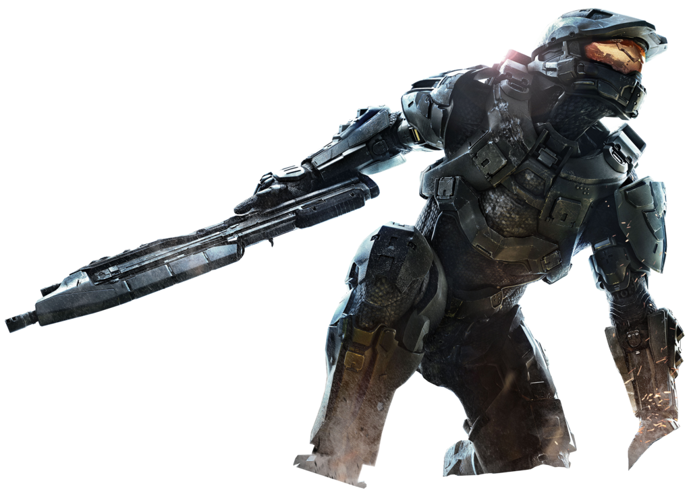
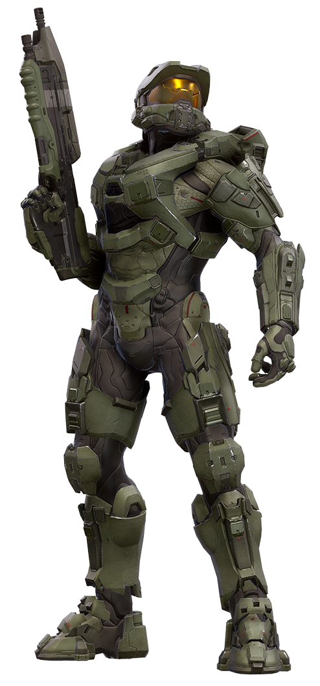
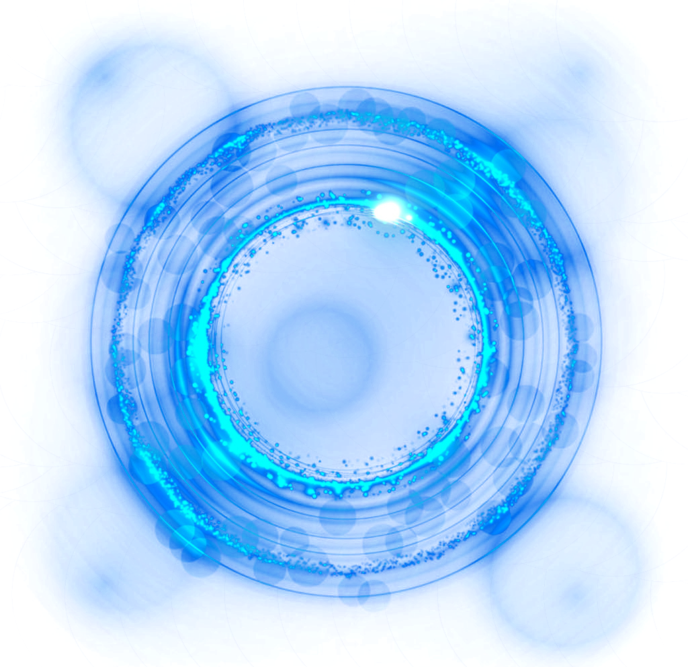
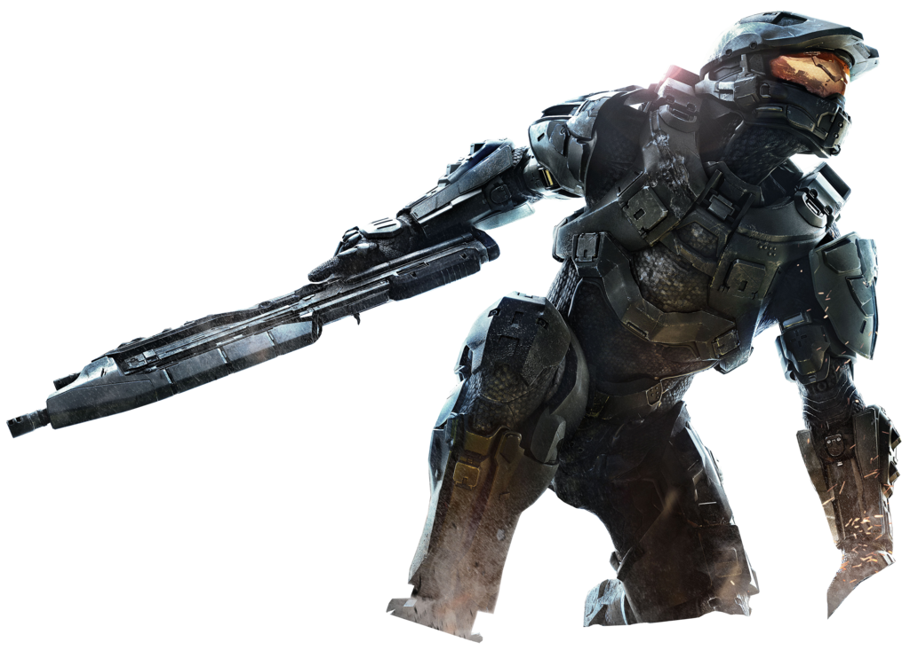
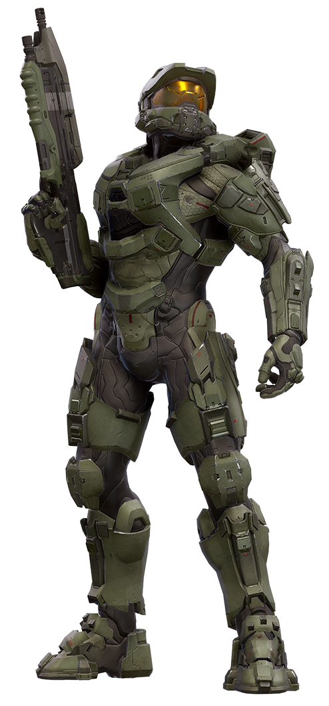
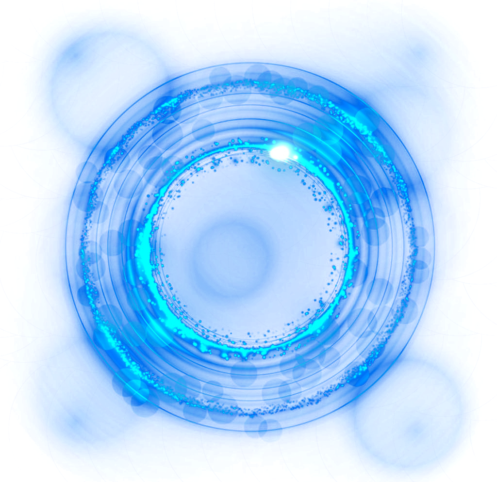

Digital Performance
 





"Halo" to seria popularnych gier wideo, które zostały stworzone przez studio Bungie, a następnie przejęte przez 343 Industries, będące częścią Microsoft Studios. Pierwsza gra z serii, "Halo: Combat Evolved," została wydana w 2001 roku jako ekskluzywna produkcja dla konsoli Xbox.
Główny bohater serii to Master Chief, supersoldat znany jako Spartan, który walczy z obcymi rasami zwanych Kovenantem. Gra oferuje mieszankę sci-fi, akcji, oraz bogatej fabuły, która skupia się na walce między ludźmi a Kovenantem, a także na tajemniczym pierścieniu kosmicznym znanym jako Halo.
Kluczowe cechy serii "Halo" to:
- Gameplay FPS (First-Person Shooter): Gry w serii "Halo" są pierwszoosobowymi strzelankami, co oznacza, że gracz wciela się w postać Master Chiefa i doświadcza gry z jego perspektywy.
- Multidyscyplinarność: Oprócz trybu fabularnego, serię "Halo" charakteryzują również rozbudowane tryby multiplayer, które zdobyły ogromną popularność. Gracze mogą rywalizować ze sobą w różnorodnych trybach rozgrywki, takich jak Deathmatch czy Capture the Flag.
- Bogata Fabuła:Świat "Halo" jest rozbudowany i opowiada historię o konflikcie między ludźmi a obcymi rasami. Fabuła rozwija się na przestrzeni wielu gier, książek i innych mediów.
- Innowacje Względem Rozgrywki: "Halo" wprowadziło wiele innowacyjnych elementów w gatunku strzelanek, takich jak regenerujący się pancerz, różnorodność broni, pojazdy, a także sztuczna inteligencja postaci niezależnych.
- Soundtrack: Muzyka w grach "Halo," skomponowana głównie przez Martina O'Donnella i Michaela Salvatoriego, zdobyła uznanie jako jedna z najbardziej epickich i charakterystycznych ścieżek dźwiękowych w historii gier wideo.
Seria "Halo" stała się jednym z filarów sukcesu konsol Xbox, przyciągając szeroką rzeszę fanów na całym świecie. Wraz z kolejnymi częściami, twórcy starają się wprowadzać nowości, jednocześnie dbając o zachowanie charakterystycznego klimatu i jakości, która wyróżnia "Halo" na rynku gier wideo.